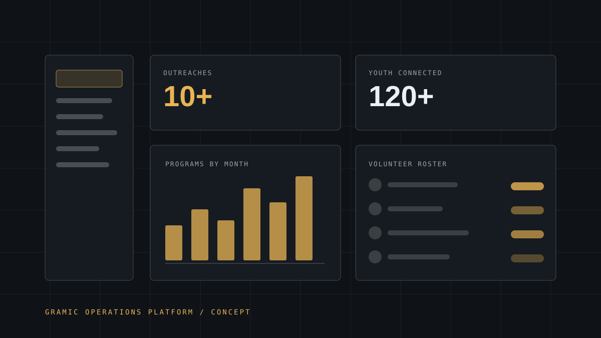

Community · Software
GRAMIC Platform
A management platform for the non-profit I lead technology for, pulling outreaches, volunteers, programmes and reporting into one place instead of six spreadsheets.

- Role
- Product owner, technical & design lead
- Status
- In design · PRD complete, build pending
- Organisation
- GRAMIC's Foundation (youth-led NGO)
- Users
- Leadership, IT & media team, volunteers
- Scope
- Outreaches · volunteers · programmes · reporting
- Related
- Head, IT & Media Team
Problem
GRAMIC's Foundation runs more than fifteen community programmes across ten-plus outreaches, coordinated by young volunteers who each hold part of the picture. Attendance lives in one person's notebook, the programme calendar in another's phone, media assets in a third's chat thread, and the report a donor asks for is assembled by hand from all of them.
None of these tools are broken. They simply do not talk to each other, and the cost of that lands every time an outreach is planned or a report is due.
Why it mattered
A volunteer's time is already scarce. Every hour spent hunting for a schedule or re-typing attendance is an hour not spent with the young people the foundation exists to serve. Worse, fragmented records make impact hard to prove, and unproven impact makes funding harder to win.
The foundation has connected 120+ young people to 15 community programmes. That number should take seconds to produce, not an afternoon.
My role
As Head of the IT & Media Team I own the technical direction of the foundation. For this platform that means:
- Interviewing the volunteers and leadership who would actually use it, and writing what they said into a product requirements document
- Designing the information architecture: programmes, outreaches, volunteers, attendance, media and reports
- Proposing the technical approach and making the build-versus-buy case
- Producing the interface design and the dashboards leadership would see first
Technical approach
The proposal builds on stack I already run in production elsewhere, so the foundation inherits skills rather than a bespoke system nobody can maintain:
- Next.js front end: the same framework as the foundation's existing website, so any team member can contribute
- PostgreSQL for programmes, outreach records, volunteers and attendance, with role-based access so a volunteer sees their own tasks and leadership sees everything
- Media library for outreach photography, tagged by programme and date so reports can be assembled instead of searched for
- Reporting views that generate the numbers the foundation already reports by hand
- Deployment on a free-tier host first, migrating only when usage demands it
Implementation
The most important engineering decision so far has been to not write code yet. The PRD and the design work came first, because building a system from assumptions is how non-profit software ends up abandoned after two months.
Sequenced deliberately:
- Map the current workflow end to end: where information actually lives today
- Agree on the minimum set of entities the platform must model
- Design the two or three screens people would use weekly, not the twenty a spec imagines
- Ship that thin slice, measure whether volunteers adopt it, then expand
Status: product requirements and technical/design work are complete. The build has not started, and I am marking this as in design rather than claiming a deployment that does not exist.
Impact
Two things have already changed because of this work, before a line of production code:
- The foundation's operations are documented for the first time: a written record of programmes, outreaches and roles that survives any single volunteer leaving
- Impact figures (10+ outreaches, 120+ youth, 15 programmes) have a defined source, which makes them defensible to a donor instead of merely asserted
Operational impact from the platform itself will be measured after launch: adoption rate, hours saved on reporting, and attendance recorded per outreach.
Challenges
- Intermittent users. Volunteers who open the platform once a month cannot be asked to remember a complex interface. Everything has to be obvious on first sight.
- Low connectivity. Deployment has to tolerate slow and unreliable connections; a heavy app will simply not be used in the field.
- Data entry discipline. A system is only as good as the records people bother to add, so the entry flow has to be shorter than the notebook it replaces.
- Continuity. Any system I build must be maintainable by the next person on the IT team, which constrains how clever I am allowed to be.
What I learned
This project taught me that writing the PRD is engineering. Deciding which entities matter, which fields are mandatory and which reports are worth generating is where the system's success or failure is decided, long before a schema exists.
It also reinforced a rule I now apply everywhere: build with the people who will use it, or you will build something they quietly route around.